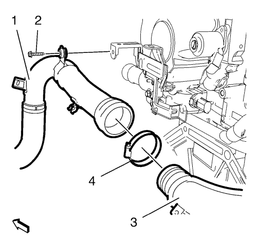

Suelte el clip de retención del mazo de cables del motor del tubo flexible delantero de salida del refrigerador de aire de carga.
Suelte el tubo flexible del respiradero del cambio del tubo flexible delantero de salida del refrigerador de aire de carga.

Retire el tornillo del soporte del tubo flexible delantero de salida del refrigerador de aire de carga (2).
Afloje la abrazadera que une el tubo flexible delantero de salida del refrigerador de aire de carga al tubo flexible trasero (4).
Suelte el tubo flexible delantero de salida del refrigerador de aire de carga (1) y la abrazadera (4) del tubo flexible trasero de salida del refrigerador de aire de carga (3).
Suelte los 2 clips de retención del mazo de cables del tubo flexible trasero de salida del refrigerador de aire de carga (2).
Coloque una herramienta adecuada en la ranura (1) y gire el anillo de bloqueo hacia la izquierda.
Suelte el tubo flexible trasero de salida del refrigerador de aire de carga (2) del cuerpo de la mariposa (3).
Retire el tubo flexible trasero de salida del refrigerador de aire de carga (2).
Nota: Asegúrese de que el anillo de seguridad está cerrado.
Monte el tubo flexible trasero de salida del refrigerador de aire de carga (2) en el cuerpo de la mariposa (3).
Fije los 2 clips de retención del mazo de cables en el tubo flexible trasero de salida del refrigerador de aire de carga (2).
Monte el tubo flexible delantero de salida del refrigerador de aire de carga (1) y la abrazadera (4) en el tubo flexible trasero de salida del refrigerador de aire de carga (3).
Monte el tornillo del soporte del tubo flexible delantero de salida del refrigerador de aire de carga (2) y apriételo a 9 N·m (80 lib. pulg.).
Apriete la abrazadera que une el tubo flexible delantero de salida del refrigerador de aire de carga al tubo flexible trasero (4) a 4 N·m (35 lib. pulg.).
Fije el clip de retención del mazo de cables del motor al tubo flexible delantero de salida del refrigerador de aire de carga.
Fije con clips el tubo flexible del respiradero del cambio al tubo flexible delantero de salida del refrigerador de aire de carga.